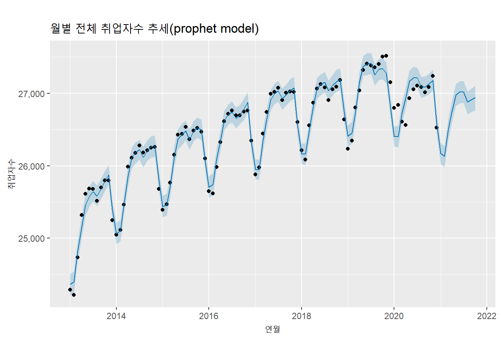
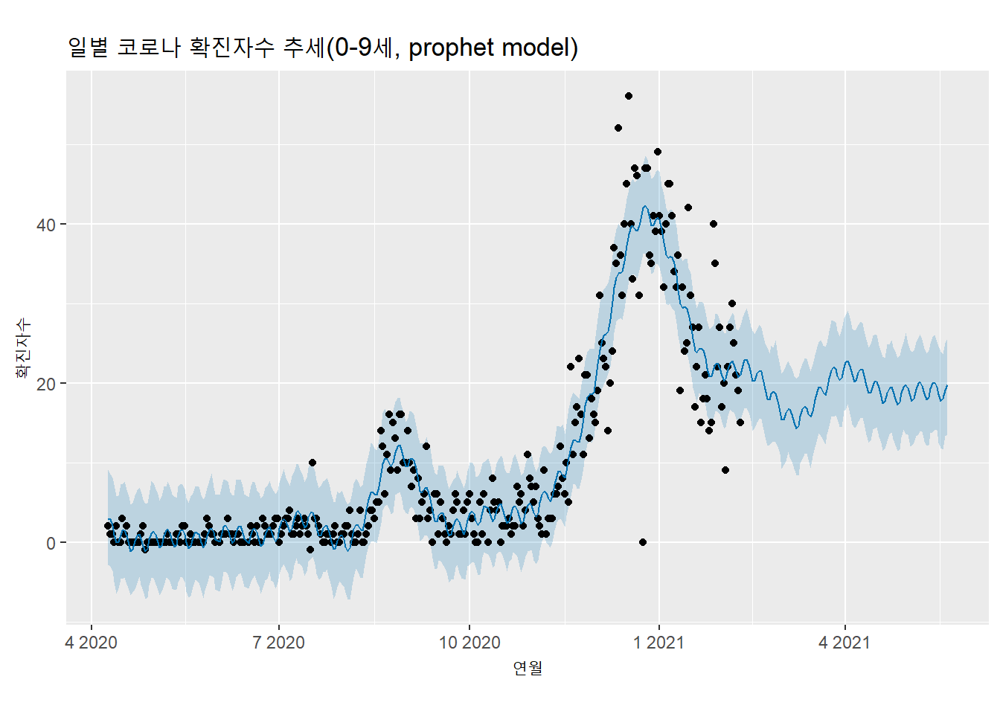
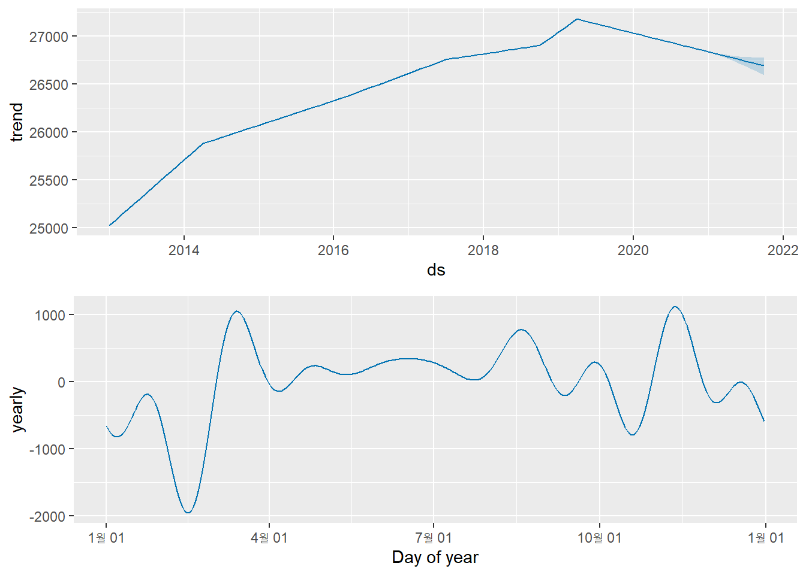
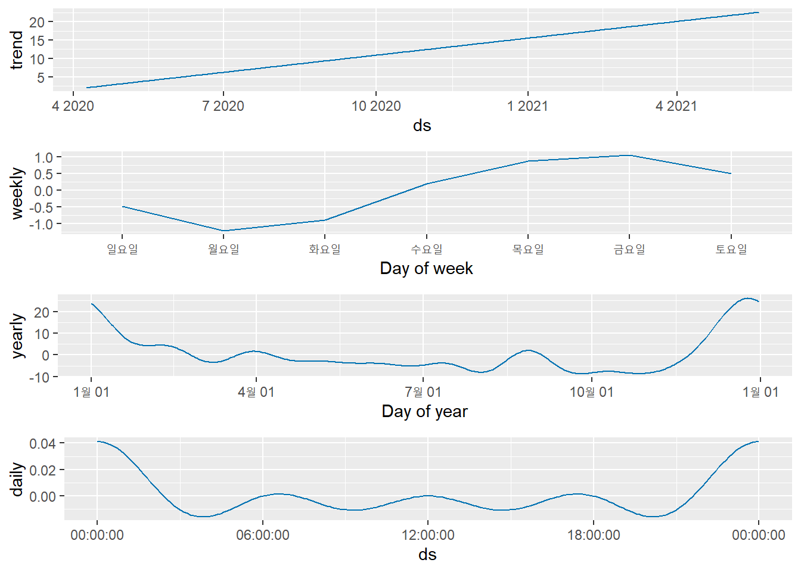

6.6 prophet 모델
Prophet 모델은 페이스북에서 자사 데이터를 기반으로 개발한 시계열 모델로 prophet 패키지를 통해 R과 Python에서 사용할 수 있다. 이 모델은 연도별, 주별, 일별 계절성 및 휴일 효과에 적합한 비선형 추세에 알맞은 가법 모델을 통해 시계열 데이터를 예측한다. (무슨 말인지 몰라도 상관없다) 페이스북에서는 prophet 모델이 ‘빠르고 정확하다,’ ‘완전 자동화되어 있다,’ ‘예측을 조절할수 있다,’ ’R과 Python에서 사용할 수 있다’고 홍보하고 있다.19 하지만 예측 방법론을 페이스북에서 공개하지 않는다. 이 부분은 시계열 분석 방법론을 연구하는 연구자들에게는 단점이지만 시계열 분석을 실무에서 사용하는 사람들은 오히려 장점이 될 수 있다.(머리아프게 공부하지 않고 그냥 쓰면 되니까)
prophet 모델은 시계열 데이터를 추세(t), 계절성(s), 휴일(h), 오차의 특성(feature)로 분리한다. 추세(t)는 반복이 되지 않는 추세, 계절성(s)은 계절성과 같은 반복적인 변화, 휴일(h)은 공휴일과 같이 달력상에서의 불규칙한 특성(feature)을 말한다. 여기에 오차가 더해지는데 이 오차는 특정 모델로 적용이 어려운 정규분포를 따르는 오차라고 가정한다.20 prophet 모델은 ARIMA 모델 같이 시계열 데이터의 구조를 통해 관계를 분석하는 모델과 달리 데이터 구조가 어떻던 데이터에 적합한 커브를 그리는데 목표를 두고 있다. 이렇게 함으로써 여러 주기를 가지는 계절성에 쉽게 사용할 수 있고, ARIMA 모델과 같이 일정한 데이터 주기를 맞추기 위해 데이터를 채워넣는 작업을 피할수 있고, 매우 빠르게 다양한 모델 스펙을 경험할 수 있고, 에 적합시킬 수 있으며, 회귀에 경험이 많은 분석가들의 개념에 쉽게 이해될 수 있는 형태의 매개변수들을 사용한다는 장점이 있다고 한다.
prophet 모델을 적용하기 위해서는 prophet() 함수를 사용한다. prophet() 함수는 data.frame 객체를 사용하는데 data.frame에는 컬럼 이름이 ’ds’와 ’y’으로 설정된 두개의 데이터 필드가 필요하다. ds 컬럼은 date 데이터 타입이어야 하며 y 컬럼은 수치 컬럼이어야 한다.
library(prophet)
students.prophet <- data.frame(ds = as.Date(paste0(students.total$연도, '-01-01')), y = students.total$학생수계)
model.prophet.students <- prophet(students.prophet)
future.students <- make_future_dataframe(model.prophet.students, periods = 10, freq = 'year')
forecast.students <- predict(model.prophet.students, future.students)
plot(model.prophet.students, forecast.students) +
ggrepel::geom_text_repel(aes(label = scales::number(y, big.mark = ',', accuracy = 1)), vjust = 1, size = 3) +
labs(title = 'prophet model', x = '연도', y = '학생수') +
scale_y_continuous(labels = scales::number_format(big.mark = ','))
prophet_plot_components(model.prophet.students, forecast.students)employees.prophet <- data.frame(ds = employees[,1], y = employees[,2])
model.prophet.employees <- prophet(employees.prophet)
future.employees <- make_future_dataframe(model.prophet.employees, periods = 10, freq = 'month')
forecast.employees <- predict(model.prophet.employees, future.employees)
plot(model.prophet.employees, forecast.employees) +
labs(title = '월별 전체 취업자수 추세(prophet model)', x = '연월', y = '취업자수') +
scale_y_continuous(labels = scales::number_format(big.mark = ','))
prophet_plot_components(model.prophet.employees, forecast.employees)
covid.prophet <- data.frame(ds = wide.covid19.by.age$date, y = wide.covid19.by.age$`0-9세`)
model.prophet.covid <- prophet(covid.prophet, yearly.seasonality=TRUE, daily.seasonality=TRUE, weekly.seasonality=TRUE)
future.covid <- make_future_dataframe(model.prophet.covid, periods = 100, freq = 'day')
tail(future.covid, 10)## ds
## 393 2021-05-11
## 394 2021-05-12
## 395 2021-05-13
## 396 2021-05-14
## 397 2021-05-15
## 398 2021-05-16
## 399 2021-05-17
## 400 2021-05-18
## 401 2021-05-19
## 402 2021-05-20forecast.covid <- predict(model.prophet.covid, future.covid)
plot(model.prophet.covid, forecast.covid) +
labs(title = '일별 코로나 확진자수 추세(0-9세, prophet model)', x = '연월', y = '확진자수') +
scale_y_continuous(labels = scales::number_format(big.mark = ','))prophet_plot_components(model.prophet.covid, forecast.covid)